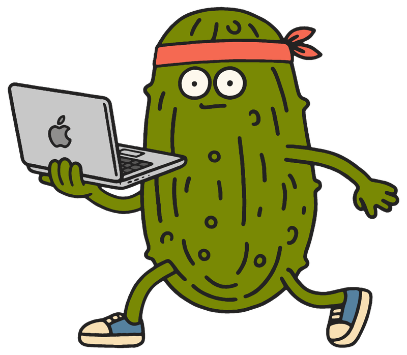

맥 스크린샷 보관함
캡처한 모든 순간,
⇧
⌥
S
예전 방식
캡처는 했는데,
어디 갔지?
찍을 땐 좋았는데, 바탕화면은 스크린샷으로 테트리스 중. 정작 필요한 한 장은 실종.
?
WITH PICKLE
찍는 즉시,
피클병에
차곡차곡
.
신선
보관
왜, 피클일까
01
자동 저장
찍으면 바로 피클병으로.
02
1초 편집
블러·펜·크롭, 그 자리에서.
03
메뉴바 보관함
메뉴바에서 슥- 꺼내 쓰기.

PIC
KLE
스크린샷을 피클처럼, 새콤하게 절여두세요.
무료 다운로드
pizza-clip.com/pickle · macOS 13+ · FREE
PICKLE
MACOS SCREENSHOTS
pizza-clip.com/pickle